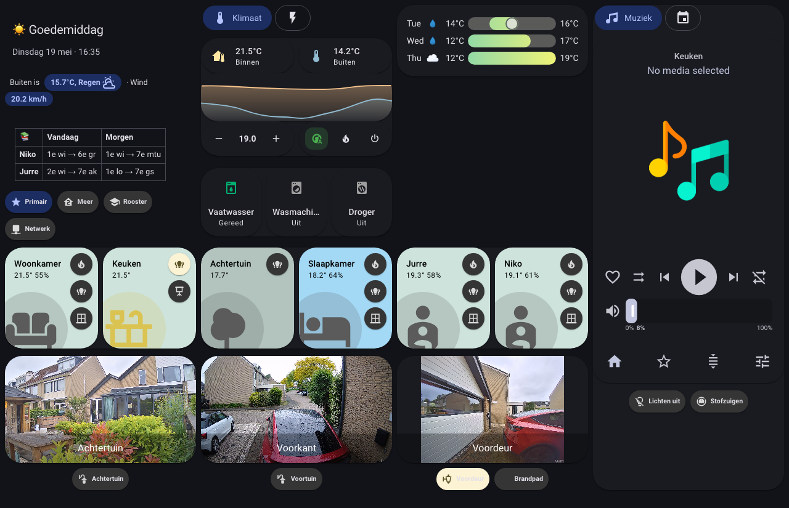
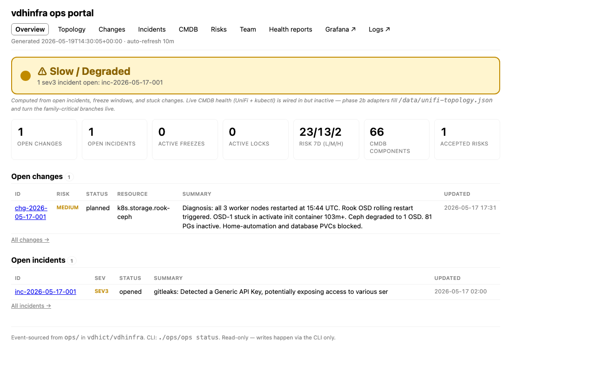

A house that runs itself
(almost)
How one household turned home infrastructure into a properly managed system
Your house is already a data centre
A typical connected household runs 60+ pieces of software simultaneously
- Lights that run firmware. Heating that connects to the cloud. A router with a 50-page settings menu.
- Add a smart doorbell, an EV charger, a solar inverter, a media server, and a security camera: you are now operating a small IT estate.
- Most of this runs with no oversight, no backup, no change history.
What it looks like without discipline
"Works on my machine" — until it doesn't
- Manual changes nobody documented
- No backups — one drive failure = five years of automations gone
- No change review — wrong setting at 2 a.m.
- Every change logged with name + reason
- Hourly backups, offsite mirror
- Review gate before every medium/high-risk change
One principle
Treat home infrastructure like a small production system
- Every change is intentional.
- Every change is recorded.
- Every change is reversible.
- A team of specialists makes sure it stays that way.
The team
Eleven specialists. One mandate each. All named after Greek deities.
No one executes without a plan. No plan runs without a review.
The engineers
Each one owns a domain and refuses to touch anyone else's without asking
The people who say no
A change doesn't run until someone whose job is checking it says it's ready
The design and communications layer
Four specialists who work upstream of implementation
The hardware
Six small computers in the home rack — three that coordinate, three that do the work
- 3 control-plane nodes: Beelink EQ14 Pro mini PCs (Intel N150, 16 GB RAM, 500 GB NVMe). The brain trust.
- 3 worker nodes: Intel NUC 11s (i5, NVMe for the OS, 1 TB SATA SSD dedicated to storage). The muscle.
- Synology NAS: dedicated network-attached storage for large media.
- Everything is wired. Wi-Fi is for phones and tablets, not infrastructure.
- Total footprint: 6 nodes + router (UDM Pro Max) + NAS.
Talos: no keyboard, no password, no problem
The nodes run an operating system that cannot be configured manually
- Talos Linux: immutable, API-driven. No SSH login. No keyboard terminal. Configuration is applied by sending a config file over the network.
- Every OS configuration is code. It lives in Git. It can be reviewed, versioned, and reproduced.
- An attacker who gets inside the network can't log in to a node and type commands. There's nothing to type on.
What runs on it
Home automation, media, databases, and the system that keeps all of it working
🏠 Home Automation
- Home Assistant — 200+ devices
- Zigbee2MQTT (short-range wireless bridge)
- Z-Wave JS (Z-Wave bridge)
- Node-RED (complex automation flows)
- ESPHome (custom sensor firmware)
⚡ Energy
- evcc — EV charge controller
- Tesla Fleet API integration
- Zonneplan live tariff feed
- Solar inverter monitoring
🎬 Media
- Plex (video streaming)
- Radarr (movie tracking)
- Calibre (ebooks)
⚙ Infrastructure
- Database cluster (PostgreSQL)
- Certificate manager (auto-renewing HTTPS)
- Secret vault (1Password integration)
- Metrics + log systems
66 named components · 14 namespaces
The shared notebook
All configuration is code, stored in Git, applied automatically
- Git: a version-control system — a document with infinite undo history where every change is signed with a name, a date, and a reason.
- Everything about this cluster — every app, every network rule, every configuration value — is a file in this repository.
- Flux reads that repository every hour and makes the live system match it.
- If a computer dies: restore the OS, point Flux at the repository, wait 20 minutes.
How a change happens
Request. Plan. Check. Execute. Record evidence. Close.
- Every deliberate change follows the same lifecycle, regardless of size.
- Change record: what is being changed, on which resource, by whom, at what risk level, with what rollback plan.
- After execution, evidence is recorded — a screenshot, a log entry, a test result. Not "looks fine". Real evidence.
- The history is permanent. Every closed change is part of the audit trail.
The risk dial
How much review a change gets depends on how much could go wrong
| Level | Examples |
|---|---|
| LOW | Image bump, comment edit, dashboard tweak |
| MEDIUM | New automation, network route, new integration |
| HIGH | Auth, firewall, storage config, OS settings |
This is not bureaucracy. It's proportional oversight.
Who decides
Three levels: the engineer, Themis, or Sander
| Risk | Who approves | What triggers it | What a fail means |
|---|---|---|---|
| LOW | The engineer | Automatic — change is logged | N/A — no gate |
| MEDIUM | Themis (automated checks) | Schema, rollback plan, freeze window, security flags | Change returns to engineer |
| HIGH | Sander (explicit approval) + Themis | Auth, firewall, storage, OS, sensitive resources | Blocked until approved |
Safety decisions (ADR-0003 etc.) are permanent Architecture Decision Records. Even the team can't override them without another ADR.
The lesson that became a rule
Family-critical infrastructure never runs through a smart plug
Firmware-controlled relay, six hours of investigation, whole-house outage.
Pure battery backup. No Wi-Fi, no app, no firmware. The rule is four words: unplug it from there.
ADR-0003: this rule is written down. Future hardware additions are checked against it. Argus scans for violations.
The car charges when it's cheapest (or free)
Solar surplus and live grid tariffs combine to decide when the EV charges
- The house has a solar inverter. On a sunny afternoon, it produces more electricity than the house uses.
- The EV charger (Tesla Wall Connector Gen 3) reads that surplus via evcc — a specialist charge controller running in the cluster.
- evcc also reads the live Zonneplan electricity price. It knows the cheapest hour of the day.
- Cloudy winter day: car charges at 3 a.m. when prices are lowest. Sunny summer afternoon: charges for free from the roof.
- None of this requires manual action.
The garden waters itself — when it needs to
Three soil sensors and a rain forecast decide whether the irrigation runs
- Three capacitive soil moisture probes in the backyard — one at the front, one in the middle, one near the tree.
- Every morning at 06:00, an automation takes the median of their readings.
- If moisture is above 30% → skip. If rain is forecast in the next 12 hours → skip. Otherwise, open the valve for 10 minutes.
- The threshold and duration are adjustable via sliders in the dashboard. No YAML editing.
The house adjusts to where people actually are
Presence detection, occupancy-linked heating, motion-linked lights
- Motion sensors in every room. Presence sensors (Bluetooth, Wi-Fi device tracking) for who's home.
- Heating responds to occupancy: a room nobody is in doesn't heat to full temperature.
- Lights turn on when someone enters, off after a configurable timeout when they leave.
- Evening lighting scene shifts colour temperature after sunset — warmer, lower, without anyone touching a switch.
- All of this runs without cloud dependencies.
One glance
The kitchen tablet shows the state of the house in plain language
- A Pixel Tablet mounted in the kitchen, running in kiosk mode (no home button, no notifications, just the dashboard).
- One screen: who's home, what's the indoor temperature, what's the heating doing, is the car charging, what's the energy reading.
- Updated in real time. No refresh button. No login.

captured from live system]
Every morning: a clean report
At 06:00, the system checks itself. At 08:00, the summary lands on Sander's phone.
- Nine automated collectors run at 02:00: node health, storage health, backup status, certificate expiry, pod restarts, Ceph storage usage, energy sensors.
- A triage step at 03:00 applies four auto-fix rules: clean up failed pods, unstick stalled deployments, restart genuinely crashed services.
- At 06:00 the report is generated and published to health.bluejungle.net.
- At 08:00 a push notification lands on the phone with a link.
- The report catches slow-burn problems — a drive filling up, a certificate due in 10 days — before they become urgent.

What comes next: proper network segmentation
Moving from "everything on one network" to servers, clients, and IoT on separate lanes
- Currently: servers, laptops, phones, smart plugs share one physical network. Segmented logically, but one misconfiguration would let a smart plug talk to the cluster.
- Next: cluster nodes move to their own VLAN (a virtual network — separate lane on the same cables).
- BGP (Border Gateway Protocol — the protocol the internet itself uses) is already configured in a branch; not yet deployed to production.
- After this: IoT devices on their own segment, unable to initiate connections to the server segment.
What comes next: one live picture of everything
A topology map where every component has a health indicator in plain colour
- A web portal showing the full topology — internet, router, switch, cluster nodes, storage, applications — as a visual map.
- Each component: green (healthy), yellow (warning), red (problem).
- Data pulled from the live cluster, the router, and the metrics system.
- Two audiences: the household ("everything is fine") and Sander (the full operational view).
- The cluster-health report at health.bluejungle.net is the current prototype.

What comes next: full dual-stack IPv6
Dutch internet infrastructure is IPv6-native. The cluster will be too.
- KPN provides a /48 IPv6 prefix — 65,000+ possible subnets, enough for every device to have its own globally routable address.
- IPv6 dual-stack is designed into the roadmap but currently blocked by a known bug in the cluster's network layer related to local address announcements.
- Once the bug is resolved upstream, the cluster will be rebuilt with dual-stack enabled from the start — it must be configured at creation time, not added later.
- Until then: IPv4 only, but the architecture is ready to extend.
"Every change is deliberate, recorded, reversible — and reviewed by someone whose only job is to say no when it isn't ready."